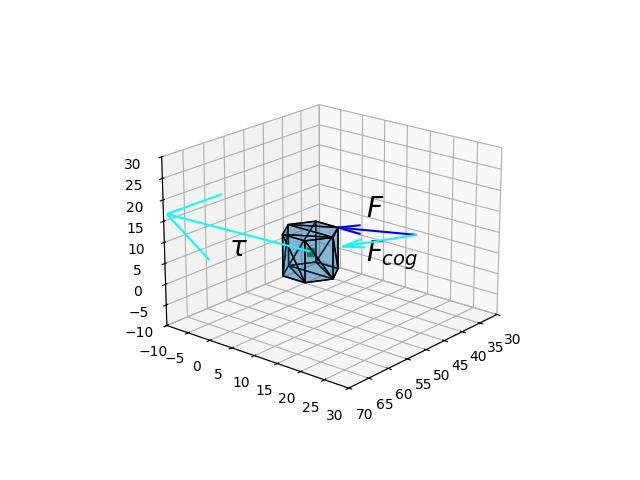

Daha önce rotasyon matrisi bazlı hareket denklemlerini vermiştik. Bu yazıda cisim duruşu ve dönüş mekaniğini kuaterniyon kavramı üzerinden hesaplayacağız, daha önce görülen bazı kavramların da tekrar üzerinden geçeceğiz.
Lineer Hız, Momentum
Cisim yeri ve hızı şöyle alakalı,
\[ \frac{\mathrm{d} x(t)}{\mathrm{d} t} = v(t) \]
Katı gövdenin momentumu
\[ p(t) = m v(t) \]
Newton’un ikinci kanununa gore,
\[ \frac{\mathrm{d} p(t)}{\mathrm{d} t} = F(t) \]
Yani momentumun zamansal türevi kuvvettir. Hareket hesaplarında \(F\) entegre edilerek \(p\) hesaplanır, \(p\)’yi \(m\) ile bölerek \(v\) elde ederiz, ve onu entegre ederek cisim yeri \(x\) elde edilir [1, sf. 466].
Açısal Momentum
Lineer momentum kavramı anlaşılması kolay, onu bir tür atalet olarak görüyoruz, hareket eden bir objenin düz bir çizgi üzerindeki hareketini devam ettirmeye olan meyili. Tabii ki bu meyil, hareketin devamlılığı o anki hız ve cismin kütlesiyle orantılı, \(mv\) buradan geliyor. Açısal momentum da benzer bir kavram, tek fark bir eksen etrafında dönmekte olan bir cismin dönmeye devam etme meyili. O zaman üç boyutta, orijin etrafındaki açısal momentum \(\vec{L}\), \(m\) kütleli cismin orijine olan uzaklığı \(\vec{r}\) ile \(m\vec{v}\) çapraz çarpımıdır [1, sf. 42].
\[ L = r \times p = r \times mv \]
Aynen kuvvetin momentumun zamansal türevi olması gibi, tork benzer şekilde açısal momentumun türevidir, bunu görmek için üstteki \(L\)’nin türevini alalım,
\[ \frac{\mathrm{d} L}{\mathrm{d} t} = \frac{\mathrm{d} (r \times p)}{\mathrm{d} t} \]
Eşitliğin sağındaki türev zincirleme kuralı ile şöyle açılır,
\[ = r \times \frac{\mathrm{d} p}{\mathrm{d} t} + \frac{\mathrm{d} r}{\mathrm{d} t} \times p \]
\(\mathrm{d} p / \mathrm{d} t = F\), \(\mathrm{d} r / \mathrm{d} t = v\) olduğunu biliyoruz, üstte yerine geçirelim,
\[ = r \times F + v \times p \]
Fakat \(v\) ile \(p\) aynı yöne işaret eden vektörler, onların çapraz çarpımı sıfır, geri kalanlar,
\[ \frac{\mathrm{d} L}{\mathrm{d} t} = r \times F = \tau \]
Bir diğer eşitlik
\[ L(t) = J(t) w(t) \]
Bu formül açısal momentum ile açısal hız \(w\) (diğer kaynaklarda \(\omega\)) ile ilişkilendirir, lineer momentum’daki kütle yerine burada \(J\) (diğer kaynaklarda \(I\) diye geçer) var, ki \(J\) bir atalet tensoru, objenin şekline, ağırlık dağılımına göre değişir, ve bu değerin kendisi de obje döndükçe değişime uğrar.
Hesaplarda gereken uygulanan tork \(\tau(t)\)’un sebep olduğu cisim dönüşünü bulmak, bunun için \(\tau\) entegre edilerek \(L\) elde edilir, \(L\) değeri \(J\) ile bölünerek (daha doğrusu \(J\) bir matris olduğu için onun tersi alıp çarpılarak) \(w\) elde edilir. Kuaterniyon durumunda
\[ \frac{\mathrm{d} q(t)}{\mathrm{d} t} = \frac{1}{2} \omega(t) q(t) \]
entegre edilerek objenin dönüş sonrası yeni işaret ettiği yer bulunur (burada \(\omega\) açısal hızı temsil eden kuaterniyon). Üstteki denklemi türetmek gerekirse [4, sf. 264] kaynağına başvurulabilir. Herhangi iki kuaterniyonun bir geçiş kuaterniyonu ile birbirine bağlanabildiğini biliyoruz. O zaman ufak bir zaman dilimi \(\Delta t\) içinde \(q(t)\) ve \(q(t + \Delta t)\) kuaterniyonlarının nasıl ilişkili olduğuna bakarız, yani aradığımız bir \(\Delta r(t)\) öyle ki
\[ q(t + \Delta t) = q(t) \Delta r(t) \]
olsun, ve
\[ \Delta r(t) = \cos (\Delta \alpha) + v(t) \sin(\theta \alpha) \]
Üstteki formülü kuaterniyon tanımından [3] biliyoruz, dönüş açısı \(2 \Delta \alpha\), ve etrafında dönüşün yapıldığı eksen vektör \(v(t)\).
Dönüş açısı \(\Delta \alpha\) çok ufak, bu sebeple küçük açı yaklaşıklaması [5] üzerinden \(\cos(\Delta \alpha) \approx 1\), \(\sin(\Delta \alpha) \approx \Delta \alpha\), o zaman
\[ \Delta r(t) = 1 + v(t) (\Delta \alpha) \]
Bu demektir ki
\[ q(t + \Delta t) = q(t) [1 + v(t) (\Delta \alpha)] \]
\[ = q(t) + q(t) v(t) (\Delta \alpha) \]
\[ \Rightarrow q(t + \Delta t) - q(t) = q(t) v(t) (\Delta \alpha) \]
Şimdi her iki tarafı \(\Delta t\) ile bölüp limit uygularsak,
\[ \frac{\mathrm{d} q}{\mathrm{d} t} = \lim_{\Delta t \to 0} \frac{q(t + \Delta t) - q(t)}{\Delta t} \]
\[ = \lim_{\Delta t \to 0} \frac{q(t) v(t) (\Delta \alpha)}{\Delta t} \]
Dikkat edersek skalar \(\Delta \alpha\) değişimi \(\Delta t\) ile bölünüyor, bu bize skalar açısal değişim \(\omega(t)\)’yı verir. Bu açısal hızın vektör \(v(t)\) ile çarpılması ise \(v(t)\) etrafındaki skalar açısal değişim \(\vec{\omega}(t)\)’yı verir, yani
\[ = q(t) v(t) \omega(t) = q(t) \vec{\omega}(t) \]
Son formül dönüş açısı \(2 \Delta \alpha\) içindi, eğer \(\Delta \alpha\) istiyorsak, formülü \(1/2\) ile çarparız. Böylece
\[ \frac{\mathrm{d} q(t)}{\mathrm{d} t} = \frac{1}{2} \vec{\omega}(t) q(t) \]
formülüne erişmiş olduk. \(q(t)\) için gereken entegrasyon üstteki formül üzerinden yapılır.
Not: Hesapsal hataların birikmemesi için \(q(t)\)’yi sürekli normalize etmek iyi bir fikirdir, bu normalizasyon
\[ q(t) = \frac{\hat{q(t)}}{|\hat{q(t)}|} \]
ile gerçekleştirilebilir [1, sf. 468].
Açısal hız: diyelim \(\omega\) radyan/saniye birimli açısal hız, ve kuaterniyon olarak paylaşılmış. Eğer bir zaman dilimi \(\Delta t\) içinde \(\omega\) sabit ise, bu zaman sonrası toplam dönüş \(q'\) ne olurdu? Bu durumda formül,
\[ q' = q + \frac{\Delta t}{2} \omega q \qquad (1) \]
olur, ki \(\omega\) yine kuaterniyon olarak gösterilen açısal hız.
Hepsini bir araya koyarsak entegrasyonun uygulanacağı nihai yapı şu şekilde gösterilebilir,
\[ \frac{\mathrm{d}}{\mathrm{d} t} \left[\begin{array}{c} x \\ q \\ p \\ L \end{array}\right] = \left[\begin{array}{c} \dot{x} \\ \dot{q} \\ \dot{p} \\ \dot{L} \end{array}\right] = \left[\begin{array}{ccc} m^{-1} p \\ \omega q / 2 \\ F \\ \tau \end{array}\right] \]
Başlangıç Kuvvetleri
Şimdi “sıfırıncı anda’’ yani ilk başlangıçta uygulanan kuvvetleri, lineer, açısal, hesaplamak lazım. Obje üzerinde uygulanan noktaya bildiğimizi farzedelim, sonu o noktada başlangıcı nesne ağırlık merkezinde olan bir vektör ile kuvvet vektörü arasında çapraz çarpım yapıyoruz, bu bize torku veriyor.
Benzer şekilde sonu nesne merkezinde başı o noktada olan bir vektör daha var, lineer kuvvet bu doğrultuda uygulanacak, o vektör üzerine iki üstte görülen kırmızı vektörü yansıtıyoruz, bu da lineer kuvvet oluyor. Bir üstteki resim üzerinde gösterirsek,

Daha önce söylediğimiz gibi her iki kuvvet de ilk anda lineer ve açısal momentumu ekileyen faktörler, sonraki adımlarda etkileri yok.
Uygulanan kuvveti şöyle seçelim, STL objesi üzerindeki üçgenlerden birinin köşesini son nokta olarak alalım, uzayda herhangi bir noktası başlangıç noktası olarak alalım, ve ilk kuvvet bu vektör olsun.
import numpy.linalg as lin
from mpl_toolkits import mplot3d
from stl import mesh
mesh1 = mesh.Mesh.from_file('../../sk/2020/08/shapes/Prism_hexagon.stl')
def plot_vector1(fig, orig, v, color='blue'):
'''
baslangıcı orig olan v büyüklüğü/yönünde olan vektorü çiz
'''
orig = np.array(orig); v=np.array(v)
ax.quiver(orig[0], orig[1], orig[2], v[0], v[1], v[2],color=color)
def plot_vector2(fig, torig, tend, color='blue'):
'''
baslangic torig bitis tend olmak uzere bir vektor ciz
'''
v = tend - torig
ax.quiver(torig[0], torig[1], torig[2], v[0], v[1], v[2],color=color)
tidx = 7
f0 = np.array([40,20,10])
f1 = mesh1.vectors[tidx][0]
cog = mesh1.get_mass_properties()[1]
a = f1-f0
b = cog-f0
flin = (a.dot(b) / (lin.norm(b)**2))*b
tau = np.cross(f1-cog,f1-f0)
fig, ax = plt.subplots(1, 1, subplot_kw={'projection': '3d'})
obj = mplot3d.art3d.Poly3DCollection(mesh1.vectors)
obj.set_edgecolor('k')
obj.set_alpha(0.3)
ax.add_collection3d(obj)
plot_vector2(ax, f0, f1)
plot_vector1(ax, cog, tau, color='cyan')
plot_vector1(ax, f0, flin, color='cyan')
ax.plot(cog[0], cog[1], cog[2], 'gs')
ax.set_xlim(30,70);ax.set_ylim(-10,30); ax.set_zlim(-10,30)
ax.text(65,0,8,r'$\tau$',fontsize=20)
ax.text(35,5,8,r'$F$',fontsize=20)
ax.text(35,5,-3,r'$F_{cog}$',fontsize=20)
ax.view_init(elev=20, azim=40)
plt.savefig('phy_005_basics_06_01.jpg')
Kuvvet uygulama yönü ve onun kütle merkezine doğru olan yansıması gösterildi, ayrıca yerçekim merkezi de bir ufak küp olarak nesne içinde belirtiliyor. Merkeze olan bileşen kuvveti gösteren vektörün ucu muhakkak merkeze dokunuyor olmalı, biz burada gösterim amaçlı olarak hem kuvveti hem de bileşenini aynı başlangıçtan gösterdik. Yansıtma hesabı için bkz [6]. Tork vektörü de hesaplanıyor, ve COG çıkışlı olarak gösteriliyor. Objenin dönüşü bu vektör etrafında ve vektörün büyüklüğüne oranlı hızda olacaktır.
Simulasyon
Alttaki kodlarla bir dış kuvvet uygulanan objenin hareketini inceleyeceğiz. Obje uzayda hareketsiz duruyor, yerçekim etkisi yok. Önce ilk uygulanan kuvvet etkisinden bahsedelim. Daha önceki yazıda ilk uygulanan kuvveti direk hiza çevirmiştik, fakat kavramsal daha mantıklı olan geçiş kuvvet / tork ve onun ilk lineer ve açısal momentuma olan etkisidir.
Lineer momentum icin Newton’un ikinci kanunu der ki
\[\frac{dp}{dt} = F\]
Lineer momentum değişimi için \(t=0\) anında ve \(t_f - t_i = \Delta t\) süresinde etki eden \(F\) için
\[\int_{p_i}^{p_f} dp = \int_{t_i}^{t_f} F dt\]
\[\Delta p = p_f - p_i = \int_{0}^{\Delta t} F dt\]
Eğer \(F\) kuvveti \(\Delta t\) süresince sabit ise,
\[\Delta p = F \Delta t\]
Başlangıç açısal momentum benzer şekilde
\[\frac{dL}{dt} = \tau\]
\[\int_{L_i}^{L_f} dL = \int_{t_i}^{t_f} \tau dt\]
\[\Delta L = L_f - L_i = \int_{0}^{\Delta t} \tau dt\]
\[\Delta L = \tau \Delta t\]
\[\Delta L = (r \times F) \Delta t\]
Yani ilk lineer ve açısal momentumu üstteki \(\Delta p\) ve \(\Delta L\) olarak başlangıçta sıfır olan \(p\) ve \(L\) değerlerine ekleyeceğiz.
İlk değerler hesaplandıktan sonra simülasyonun geri kalanında \(t>0\) için Euler entegrasyonu ile güncellemeleri yapacak.
Bir püf nokta atalet matrisi tersi \(J^{-1}\) hesabı [1, sf. 467] (bizim daha önce \(I^{-1}\) olarak işlediğimiz değer). Bunun için
\[ J^{-1} = R J_{cisim}^{-1} R^T \]
kullanabileceğimizi biliyoruz. \(J_{cisim}^{-1}\) değeri objenin başlangıçtaki atalet matrisi, yani dönüş matrislerini kullanarak atalet matrisi tersini sürekli güncelleyebiliyoruz. Böylece güncellenen \(J^{-1}\) ile herhangi bir anda açısal hız \(w\)’yi hesaplayabiliyoruz. \(L = J w\) olmasından hareketle,
\[ w = J^{-1} L = J R J_{cisim}^{-1} R^T \]
Tabii hızın kuaterniyon olarak temsil edilmesi lazım, açısal hızı üstteki \(w\) ile hesapladıktan sonra onu skalar değeri sıfır olan bir kuaterniyon yapıp onu mevcut yönsel duruş (ki o da kuaterniyon ile temsil ediliyor) ile çarpıyoruz, ve duruştaki değişimi elde ediyoruz, (1) formülünde gördük.
from mpl_toolkits import mplot3d
import numpy.linalg as lin, sys, copy, os
from stl import mesh
sys.path.append("../phy_073_rot"); import euclid
def plot_vector1(fig, orig, v, color='blue'):
orig = np.array(orig); v=np.array(v)
ax.quiver(orig[0], orig[1], orig[2], v[0], v[1], v[2],color=color)
def plot_vector2(fig, torig, tend, color='blue'):
v = tend - torig
ax.quiver(torig[0], torig[1], torig[2], v[0], v[1], v[2],color=color)
mesh = mesh.Mesh.from_file('../../sk/2020/08/shapes/Prism_hexagon.stl')
cog = mesh.get_mass_properties()[1]
tidx = 7
m = 1 # kg
p = np.ones(3) * 0 # lineer momentum
L = np.ones(3) * 0 # acisal momentum
w = np.ones(3) * 0 # acisal hiz
q = np.ones(3) * 0 # durus (orientation)
f0 = np.array([40,20,10])
f1 = mesh.vectors[tidx][0]
a = f1-f0
b = cog-f0
flin = (a.dot(b) / (lin.norm(b)**2))*b
x = cog
S1,S2,N = 0,5,20
dt = (S2-S1) / N
q = euclid.Quaternion(1,0,0,0)
Jbodyinv = lin.inv(mesh.get_mass_properties()[2])
F_ext = f1-f0
tau_ext = np.cross(cog-f1,f1-f0)
for i,t in enumerate(np.linspace(S1,S2,N)):
fig, ax = plt.subplots(1, 1, subplot_kw={'projection': '3d'})
# x ilk degeri cog, x degistikce cog'den ne kadar uzaklasmissa
# o farki mesh.vectors uzerine eklersek figurde gorulen objeyi
# o kadar yerinden oynatabiliriz.
R = q.get_rotation_matrix_3x3().to_numpy_array()
currmesh = copy.deepcopy(mesh)
currmesh.vectors = currmesh.vectors + (x - cog)
currmesh.rotate_using_matrix(R)
obj = mplot3d.art3d.Poly3DCollection(currmesh.vectors)
obj.set_edgecolor('k')
obj.set_alpha(0.3)
ax.add_collection3d(obj)
plot_vector2(ax, f0, f1)
plot_vector1(ax, f0, flin, color='cyan')
plot_vector1(ax, cog, tau_ext / 10, color='cyan')
if t==0:
# baslangicta p sifir, ve ilk F entegre edilerek ilk p
# elde ediliyor. Ayni sekilde L.
p = F_ext*dt
L = tau_ext*dt*20 # ufak bir 'hack' donusun gozukmesi icin
x = x + dt*(p / m)
R = q.get_rotation_matrix_3x3().to_numpy_array()
Jinv = R.dot(Jbodyinv).dot(R.transpose())
w = L.dot(Jinv)
wq = euclid.Quaternion(0, w[0], w[1], w[2])
qdiff = (wq * q).scalar_mul(1/2).scalar_mul(dt)
q = q.add(qdiff).normalize()
ax.set_xlabel('x');ax.set_ylabel('y');ax.set_zlabel('z')
ax.set_xlim(30,70);ax.set_ylim(-10,30); ax.set_zlim(-10,30)
ax.view_init(elev=20, azim=50)
plt.savefig('img/out-%02d.jpg' % i)
plt.close(fig)os.system("convert -loop 0 -delay 30 img/*.jpg img/rbmove1.gif")Sonuc animasyon [7]’de bulunabilir.
Kaynaklar
[1] Eberly, Game Physics 2nd Ed
[2] Bayramlı, Diferansiyel Denklemler Ders 2
[3] Bayramlı, Döndürme (Rotation) - 2
[4] Kuipers, Quaternions and Rotation Sequences
[5] Bayramlı, Normal Diferansiyel Denklemler, Trigonometri
[6] Bayramlı, Lineer Cebir Ders 15
[7] Bayramlı, Animasyon 1
{kind=link}